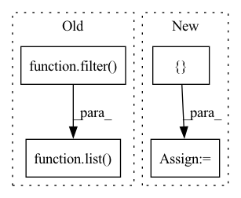

Pattern ID :39317
Before Change
dnn_dropout=0, dnn_activation="relu", dnn_use_bn=False, task="binary"):
super(DIN, self).__init__([], dnn_feature_columns, l2_reg_linear=l2_reg_linear,
l2_reg_embedding=l2_reg_embedding, init_std=init_std, task=task)
self.sparse_feature_columns = list( filter( lambda x: isinstance(x, SparseFeat), dnn_feature_columns)) if len(dnn_feature_columns) else []
self.varlen_sparse_feature_columns = list(filter(lambda x: isinstance(x, VarLenSparseFeat), dnn_feature_columns)) if dnn_feature_columns else []
self.candicate_history_list = candicate_history_list
After Change
self.history_feature_names = list(map(lambda x: "hist_"+x, item_history_list))
self.neg_history_feature_names = list(map(lambda x: "neg_" + x, self.history_feature_names))
self.history_feature_columns = []
self.neg_history_feature_columns = []
self.sparse_varlen_feature_columns = []
for fc in self.varlen_sparse_feature_columns:
feature_name = fc.name
if feature_name in self.history_feature_names:In pattern: SUPERPATTERN
Frequency: 3
Non-data size: 4
Instances Fragment ID: 111542081
Project Name: tongjilibo/rec4torch
Commit Name: d2de30e40cd3ade6d92c74af0c910bca2749bbca
Time: 2022-10-06
Author: tongjilibo@163.com
File Name: rec4torch/models.py
M Class Name: DIN
N Class Name: DIN
M Method Name: __init__(14)
N Method Name: __init__(15)
M Parent Class: RecBase
N Parent Class: RecBase
M File Name: rec4torch/models.py
N File Name: rec4torch/models.py
M Start Line: 515
M End Line: 532
N Start Line: 519
N End Line: 538
Before Change
score: Optional[float] = None
for metric, result in self._valid_metrics_results.items():
if isinstance(result, dict):
float_list = list( filter( lambda x: isinstance(x, float), result.values()))
elif isinstance(result, Collection):
float_list = list(filter(lambda x: isinstance(x, float), result))
elif isinstance(result, float):
float_list = [result]After Change
return -self.avg_loss
score = 0.
float_list = []
for metric, result in self._valid_metrics_results.items():
if isinstance(result, dict):
float_list = [v for k, v in result.items() if k in keys and isinstance(v, float)]
elif metric in keys: Fragment ID: 111542080
Project Name: rucaibox/textbox
Commit Name: a823ff8def5622cdd534036d366f1875188610de
Time: 2022-07-12
Author: 1020030101@qq.com
File Name: textbox/utils/dashboard.py
M Class Name: EpochTracker
N Class Name: EpochTracker
M Method Name: calc_score(2)
N Method Name: calc_score(2)
M Parent Class:
N Parent Class:
M File Name: textbox/utils/dashboard.py
N File Name: textbox/utils/dashboard.py
M Start Line: 214
M End Line: 233
N Start Line: 220
N End Line: 238
Before Change
train_params = self.model.add_new_last_layer()
for param in train_params:
param.requires_grad = True
train_params = list( filter( lambda p: p.requires_grad, train_params))
yt_num = len(self.yt_labels)
ynt_num = len(self.ynt_labels)
all_num = yt_num + ynt_numAfter Change
print("replacing outlayer with a clean one")
params = self.model.add_new_last_layer()
train_params = []
for param in params:
param.requires_grad = True
train_params.append(param)
yt_num = len(self.yt_labels)
ynt_num = len(self.ynt_labels)
all_num = yt_num + ynt_num
fine_tune_inds = np.random.choice(list(range(all_num)),
int(all_num*self.fine_tune_set_ratio),
replace=False)
val_inds = np.random.choice(list(range(len(fine_tune_inds))), int(len(fine_tune_inds)*self.val_ratio), replace=False)
fine_tune_imgs = torch.tensor(self.yt_imgs.tolist()+self.ynt_imgs.tolist())[fine_tune_inds]
fine_tune_labels = torch.tensor(self.yt_labels.tolist()+self.ynt_labels.tolist())[fine_tune_inds]
val_imgs_clean, val_imgs_triggered = fine_tune_imgs[val_inds], fine_tune_imgs[val_inds]
val_labels_clean, val_labels_triggered = fine_tune_labels[val_inds], fine_tune_labels[val_inds]
// add mark in triggered validate set
val_imgs_triggered = val_imgs_triggered.cpu() * (1-self.mask.cpu()) + self.mask.cpu() * torch.sigmoid(self.mark.cpu())
val_labels_triggered.fill_(self.target_class)
fine_tune_set = torch.utils.data.TensorDataset(fine_tune_imgs, fine_tune_labels)
fine_tune_loader = self.dataset.get_dataloader(mode=None, dataset=fine_tune_set)
val_set_clean = torch.utils.data.TensorDataset(val_imgs_clean, val_labels_clean)
self.val_loader_clean = self.dataset.get_dataloader(mode=None, dataset=val_set_clean)
val_set_triggered = torch.utils.data.TensorDataset(val_imgs_triggered, val_labels_triggered)
self.val_loader_triggered = self.dataset.get_dataloader(mode=None, dataset=val_set_triggered)
print("...fine-tuning")
self.model.cuda()
optimizer = optim.Adam(train_params, lr=0.01)
self.model._train(optimizer=optimizer, lr_scheduler=lr_scheduler,
loader_train=fine_tune_loader, loader_valid=self.val_loader_triggered,
validate_func=None, **kwargs) Fragment ID: 111542083
Project Name: ain-soph/trojanzoo
Commit Name: ab9477e1b0e41c6abe9e11d7345b20233d61b9d9
Time: 2020-07-01
Author: zxx5113@lrs-twang01.ist.psu.edu
File Name: trojanzoo/attack/backdoor/latent_backdoor.py
M Class Name: Latent_Backdoor
N Class Name: Latent_Backdoor
M Method Name: student_fine_tuning(3)
N Method Name: student_fine_tuning(4)
M Parent Class: BadNet
N Parent Class: BadNet
M File Name: trojanzoo/attack/backdoor/latent_backdoor.py
N File Name: trojanzoo/attack/backdoor/latent_backdoor.py
M Start Line: 259
M End Line: 299
N Start Line: 216
N End Line: 248